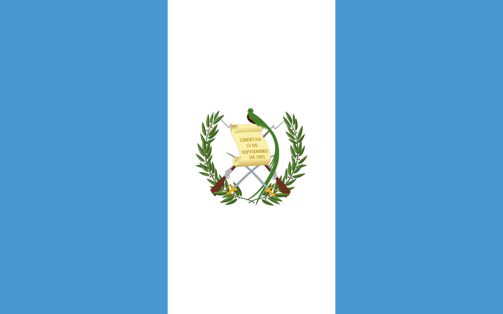

Languages Spoken:
Spanish
Places to Visit:
- Tikal National Park
- Lake Atitlan
- Semuc Champey
- Quetzaltenango
- Chichicastenango
Traditions:
- Day of the Dead
- La Quema del Diablo
- Nativity scene
- Fiesta de Santo Tomás
- Las Posadas navideñas
Customs:
Using utensils for most dishes, but using tortillas to scoop up food.
Trivia:
The Maya people invented the first chocolate bar.
